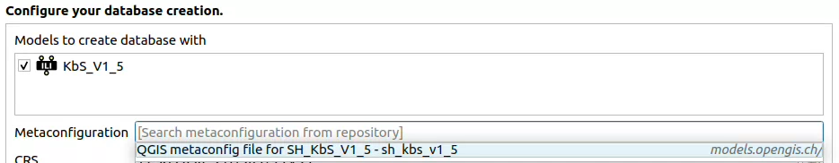
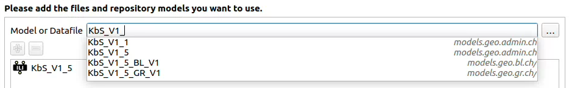

Overview
What is it about?
With Model Baker additional information for models can be found automatically via the web.
Additional information such as:
- ili2db settings (Metaconfiguration)
- Data files, like catalogs (Referenced Data)
- QGIS project configurations (so called Toppings)
This means that complex configurations can be made once and used multiple times.
Metaconfiguration
The metaconfiguration can be found before creating the physical data model on the Schema Import Configuration page.

The metaconfiguration can contain the ili2db settings as well as links to the required QGIS project configurations (toppings) and data files (referenced data).
Find technical background and detailed information about the metaconfiguration here
Referenced data
The referenced data required for a model, such as catalogs and codelists, can be found in the Data Import Configuration.

They may already have been linked via the metaconfiguration before as well.
Find technical background and detailed information about the referenced data integration here.
Toppings
The QGIS project configurations or so called "toppings" can - if not already linked via the metaconfiguration - be found each time on the Project Generation page via a "projecttopping" file.

The projecttopping defines general project configurations such as layertree, variables etc. and links to the required toppings such as layerstyle etc. which are then downloaded and applied when the project is generated.

Find technical background and detailed information about the toppings here.
Where do those additional information come from?
Just as we can now find INTERLIS models by searching the ilimodels.xml files on the repositories we can find this additional information via the ilidata.xml file.
It filters the entries by the name of the used INTERLIS model.
More information about the technical background you can find here
What are the Workflows?
All these additional information are concernig a specific model. That's why they are found according to the selected model's name.

On choosing a metaconfiguration
...that links to referenced data and a projecttopping the workflow looks like this:
- User enters the model name in the Source Selection
- ilidata.xml is parsed for links to metaconfiguration files according to the model name
-
User selects a metaconfiguration
-
Metaconfiguration file is downloaded and the ili2db settings are read from the metaconfiguration
- ili2db settings are considered in the creation of the physical model
- Links to the referenced data are read from the metaconfiguration
- ilidata.xml is parsed for links to the referenced data
- Referenced data files are downloaded and imported
- Links to the projecttopping is read from the metaconfiguration
- ilidata.xml is parsed for links to the projecttopping
- Projecttopping file is downloaded and links to the other toppings (like layerstyles etc.) is read from the projecttopping
- ilidata.xml is parsed for links to the toppings
- Topping files are downloaded
- The information is read from the projettopping and the linked toppings and included in the generation of the QGIS project
On choosing referenced data directly
...from the repositories in the Data Import Configuration the steps are:
- ilidata.xml is parsed for links to the referenced data according to the model name.
-
User selects referenced data
-
Referenced data files are downloaded and imported
Note
The links to the referenced data are found according to the used model name.
On choosing project topping directly
... from the repositories in Project Generation the steps are:
- ilidata.xml is parsed for links to the projecttoppings according to the model name
-
User selects a projecttopping
-
Projecttopping file is downloaded and links to the other toppings (like layerstyles etc.) is read from the projecttopping
- ilidata.xml is parsed for links to the toppings
- Topping file are downloaded
- The information is read from the projettopping and the linked toppings and included in the generation of the QGIS project.
Note
A projecttopping can be chosen from the local system as well.
How to make my own Toppings?
This can be easily made with the Model Baker Topping Exporter from an exiting QGIS Project.